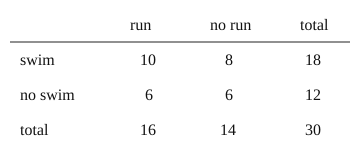

Part of Reading Probabilities From Counts. Answer in the chat (1: ..., g: c), add sure or guess after any answer, and say done when finished.
Last time: 30 members, 18 swim, 10 of them also run, 6 run but do not swim. How many do neither? You said a) 6. It is a) 6.

Two yes-or-no questions split a group four ways, and each person lands in one cell (notes 1). So rows and columns add up to totals, and a missing cell can be found from the others.
Q1. 50 students: 20 take art, 12 of those also take music, and 25 take music in all. How many take music but not art?
13
Right: 25 music students, 12 of them in art (notes 1).
Q2. Same school. How many take neither?
17
Right: 50 - 20 - 13 = 17 (notes 1).
Q3. Kim says the four cells can add up to more than 50, since some students take both. What is wrong?
each student is in exactly one cell, the both cell counts them once, so the cells add to 50
Right: one cell per person (notes 1).
You can now fill in a two-way table from partial counts.
Same school. Of the students who take music, what fraction also take art?
b (sure)